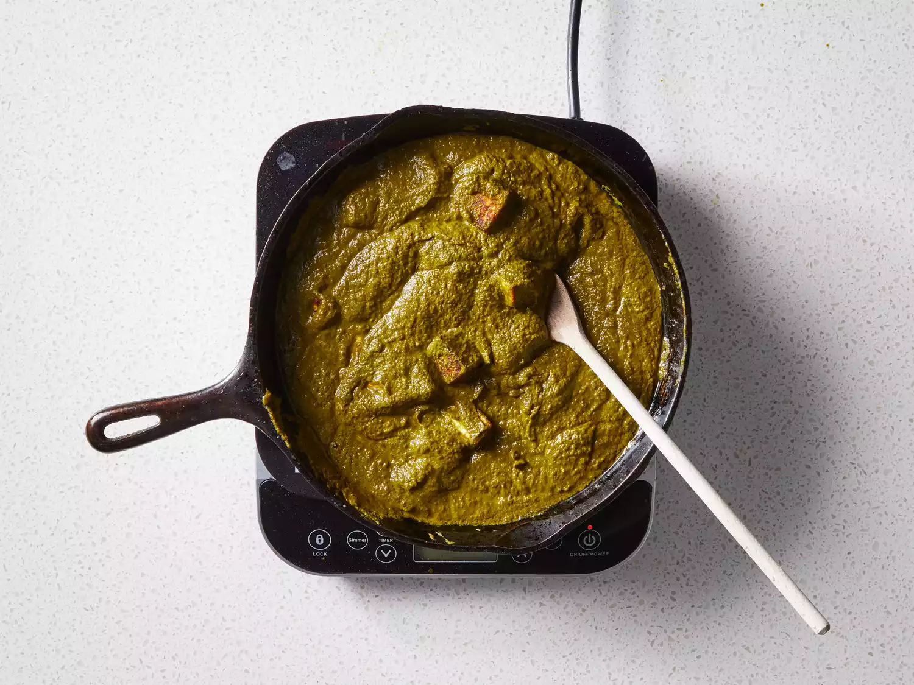

Palak Paneer

Description
Palak paneer is a classic North Indian dish featuring cubes of mild, fresh Indian cottage cheese (paneer) simmered in a vibrant, spiced spinach (palak) gravy. It combines earthy greens with warming spices and a touch of cream for a rich, flavorful curry.
Ingredients
- 2 tablespoons olive oil, divided
- 1 onion, diced
- 6 cloves garlic, crushed
- 2 teaspoons ground coriander
- 2 teaspoons ground turmeric
- 2 teaspoons garam masala
- 2 teaspoons red pepper flakes
- 2 teaspoons curry powder
- 2 teaspoons ground cumin
- 1 teaspoon salt
- 2 (10 ounce) packages frozen chopped spinach, thawed and drained
- 3 tomatoes, diced
- 1 cup water
- 2 tablespoons grated fresh ginger root
- 2 cups cubed paneer
Steps
- Gather all ingredients.
- Heat 1 tablespoon olive oil in a skillet over medium heat; cook and stir onion in hot oil until slightly tender, about 5 minutes.
- Add garlic, coriander, turmeric, garam masala, red pepper flakes, curry powder, cumin, and salt; cook and stir until fragrant, about 1 minute.
- Mix spinach, tomatoes, water, and ginger into onion mixture; simmer for 20 minutes. Remove from heat and cool slightly, about 5 minutes.
- Transfer spinach mixture to a blender and blend until smooth. Set aside.
- Heat remaining 1 tablespoon olive oil in the same skillet over medium heat; cook and stir paneer in hot oil until lightly browned, about 5 minutes.
- Stir in puréed spinach mixture and cook until heated through, 3 to 5 minutes.
Back to Odin Recipes